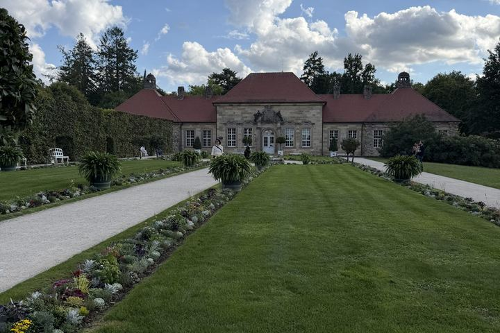
12. September 2026
Die Rückfahrt: 900 km mit Stopp in Bayreuth
Zwischenuebernachtung in Bayreuth, ein Spaziergang durch die Eremitage und Einkehr im Gasthof Veldensteiner Forst ...
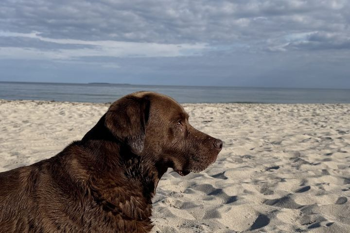
11. September 2026
Letzter Abend am Hundestrand
20 Grad, ein Hiddensee Hell und ein letztes Bad - Abschluss von zwei Wochen Urlaub ...
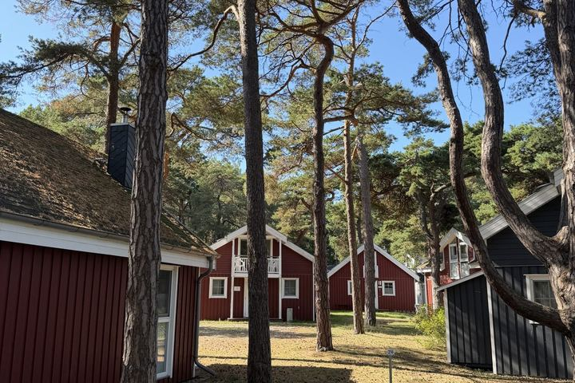
11. September 2026
Ferienhäuser in Baabe
Ferienhaeuser im Kiefernwald direkt hinter den Duenen ...
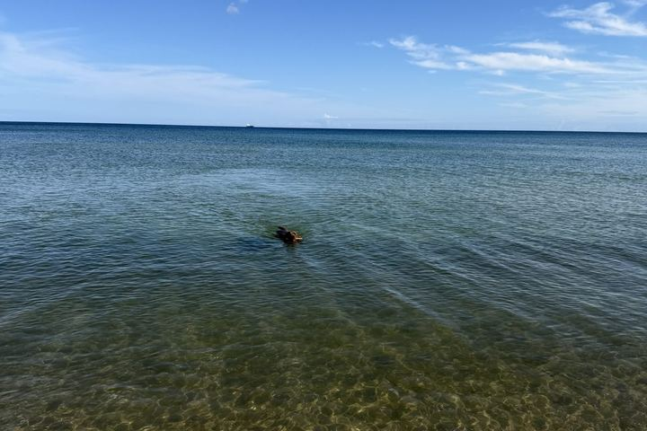
11. September 2026
Unsere Wasserwutz
Kalli und seine grosse Liebe zum Wasser - schwimmen, bis keiner mehr will ...
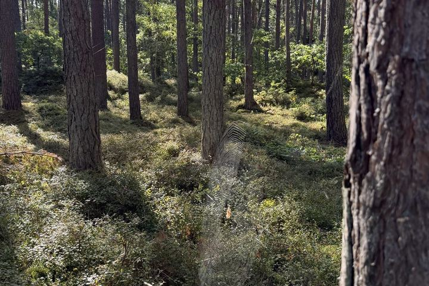
11. September 2026
Der Hundestrand in Baabe
Toben, schwimmen, schnueffeln - Kallis Paradies am Strand von Baabe ...
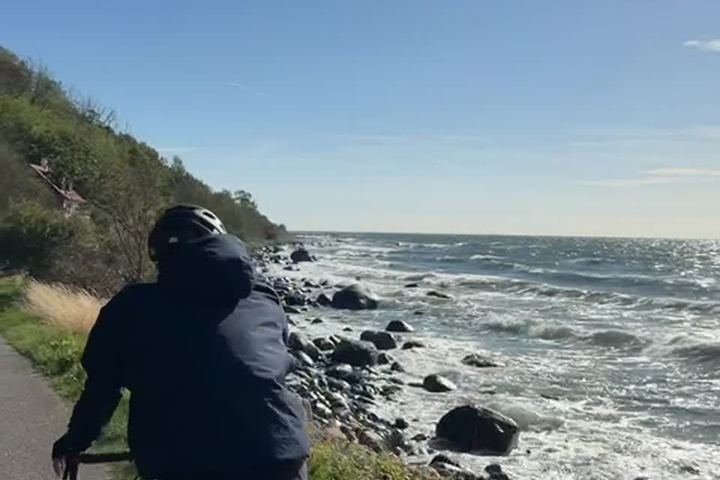
11. September 2026
Küstenradweg Richtung Rønne
Immer der Küste nach – mit dem Rad Richtung Rønne, Wind im Rücken …
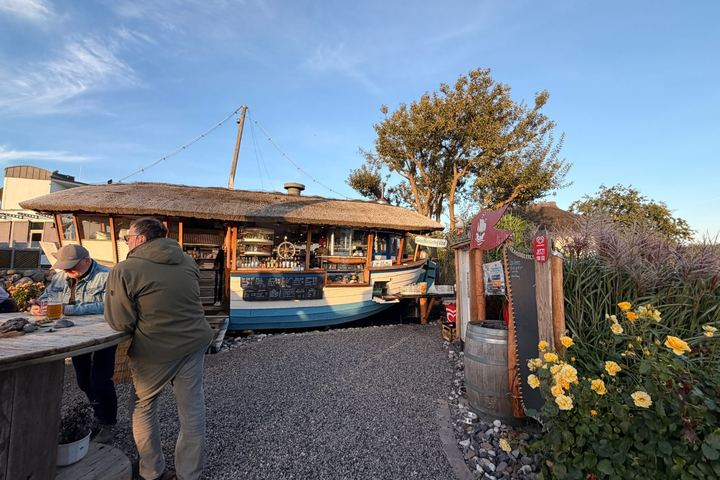
10. September 2026
Strandbar am Abend
Ein Drink an der Bar aus einem alten Boot, mit Blick aufs Meer ...
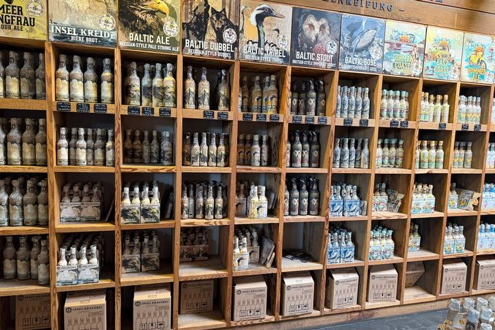
10. September 2026
Zu Besuch bei der Insel-Brauerei
Ein ganzes Regal voller Ruegener Bierspezialitaeten ...
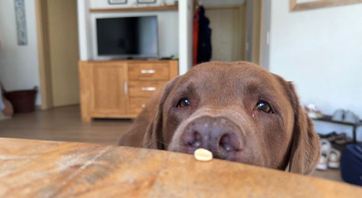
10. September 2026
Am Hafen in Wiek
Segelboote, Schilf und viel Ruhe im Nordwesten Ruegens ...
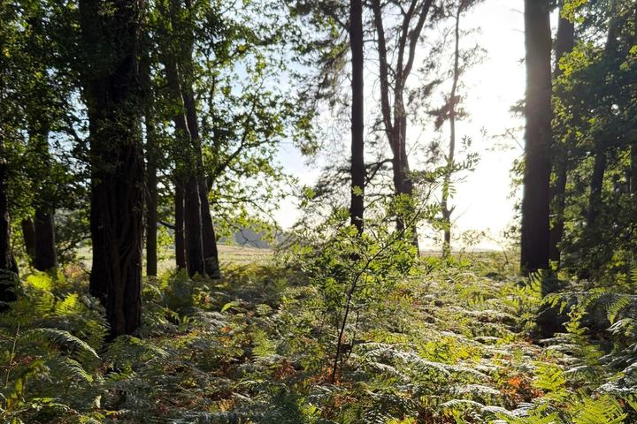
10. September 2026
Sundowner am Hafen
Ein Waldweg, eine Bootsbar und ein Sonnenuntergang zwischen den Masten …
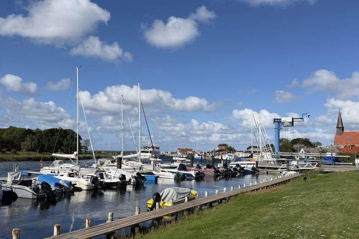
10. September 2026
Von Gingst zur Insel-Brauerei
Yachthafen Schaprode, ein Hofladen-Bummel und die "Alte Pomeranze" …
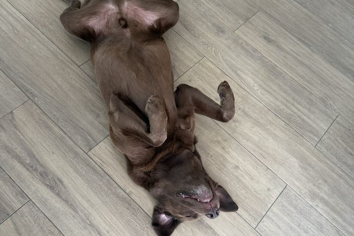
10. September 2026
Kalli beim Frühstück
Ein süßer Morgen mit dem Hund in Baabe …
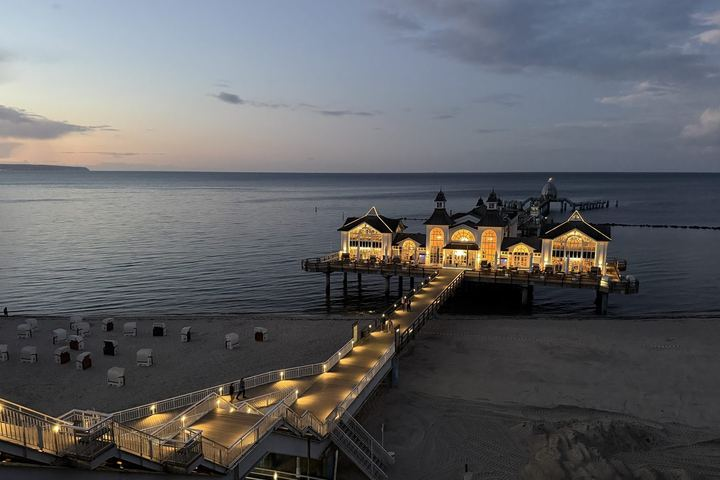
9. September 2026
Abendstimmung an der Seebrücke
Die berühmte Seebrücke Sellin im Licht der untergehenden Sonne …
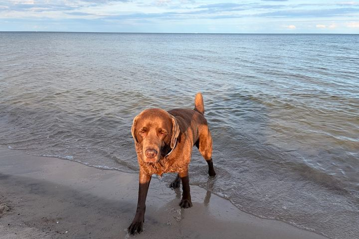
8.–9. September 2026
Erste Eindrücke auf Rügen
Kalli am Strand von Baabe und die Seebruecke Sellin im Abendlicht ...
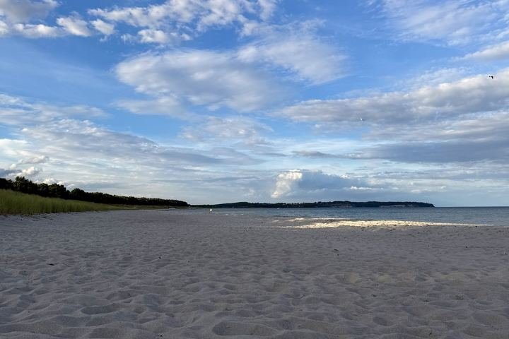
8. September 2026
Sonnenuntergang und Kite über den Dünen
Weiter Sandstrand und ein Kite hoch über den Dünen in Thiessow …
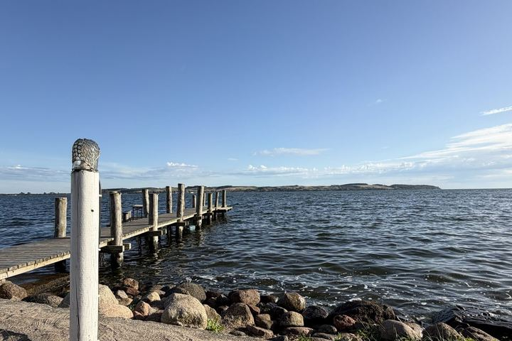
7. September 2026
Ein spontaner Abend an der Strandbar
Fish and Chips und Sonnenuntergang über der Ostsee in Mönchgut …
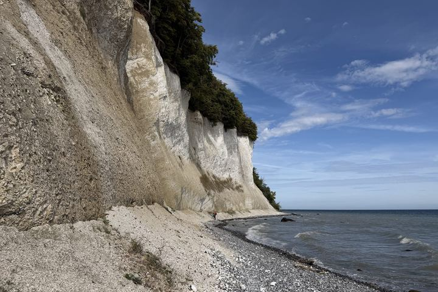
7. September 2026
Die Kreidefelsen von Jasmund
Knapp 20 Meter hoch – und ein kleiner Ausflug in die Erdgeschichte …
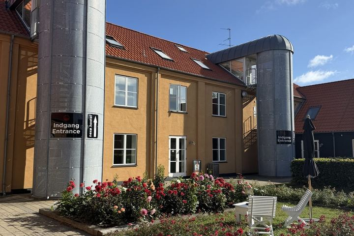
6. September 2026
2. Tag: Bornholm-Umrundung mit dem Rad
Von Nexø bis zur Festungsruine Hammershus – mit Nicki, Gegenwind und Routenkarte …
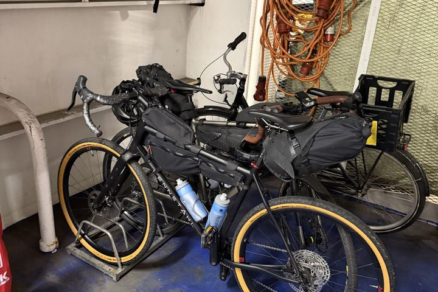
5. September 2026
1. Tag: Mit der Fähre nach Bornholm
Von Sassnitz über die Faehre nach Ronne, dann knappe 50 km mit Rueckenwind bis Nexoe ...
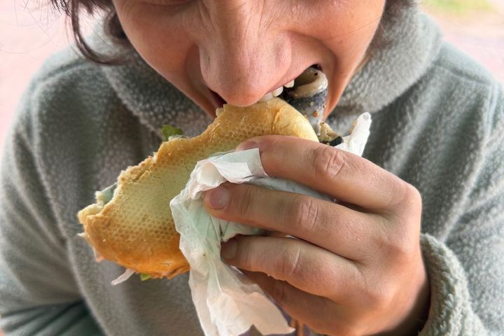
29. August 2026
Ankunft auf Fischland-Darß
Erstes Fischbroetchen, Strandspaziergang und abends im "Walfisch" ...
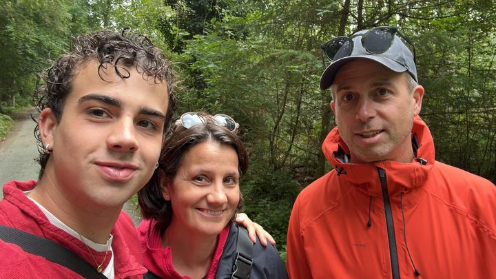
30.–31. August 2026
Noch ein paar Tage auf Fischland-Darß
Waldspaziergaenge, reetgedeckte Fischerhaeuser und Strandzeit mit Kalli ...